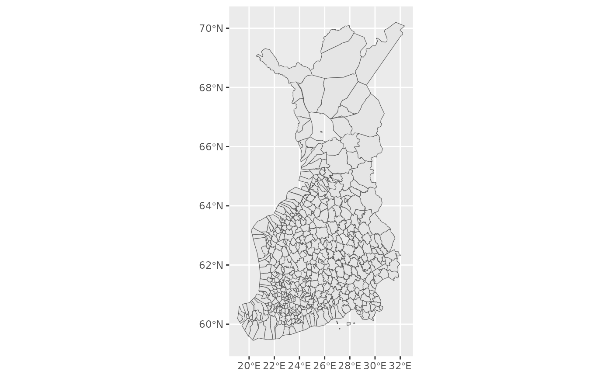

sorvi Tutorial
rOpenGov core team
2023-08-21
Source:vignettes/sorvi_tutorial.Rmd
sorvi_tutorial.RmdFinnish open (government) data toolkit for R
Introduction
sorvi package was originally intended for hosting various algorithms for Finnish open goverment data in R. After being superseded by later rOpenGov packages that are more specialized in scope (such as geofi, hetu and pxweb), sorvi has now found a new life in hosting various functions that are helpful in rOpenGov package maintenance, authoring and preparing presentations.
Installation
Install the stable release version from CRAN in R:
install.packages("sorvi")Alternatively, use remotes package to install the latest
development version from GitHub:
library(remotes)
remotes::install_github("ropengov/sorvi")Loading the package in R command line:
Using the package
The number of functions in this package has been reduced compared to older versions.
Get download statistics of eurostat-package, by year:
df <- cran_downloads(pkgs = "eurostat", sum = "by_year", use.cache = FALSE)
dfGet download statistics of various rOpenGov packages over time and draw a chart:
packages <- c("eurostat", "giscoR", "sotkanet", "geofi", "sweidnumbr")
plot <- cran_downloads(pkgs = packages, sum = "total", output = "plot", use.cache = FALSE)
plotHistorical mapping and data sets
The sorvi package includes 2 datasets:
sorvi::kunnat1865_2021 for listing municipalities that
existed between years 1865-2021, and
sorvi::polygons1909_2009 that contains polygons for most of
the municipalities contained by the former dataset. Despite the slightly
misleading name, the polygons dataset contains shapes for most
municipalities from the 1800s as well, as municipalities and their
borders remained relatively unchanged before the 2nd World War and late
1900s-early 2000s municipality mergers.
While users most definitely can use the datasets directly in their
work (and improvements / additions / forks are most welcome!), we have
included get_municipalities() function for conveniently
returning a map of Finland as it existed at a certain point in time.
A simple example of using the get_municipalities()
function for drawing a map containing Finnish municipalities in
1931:
library(ggplot2)
map1931 <- get_municipalities(year = 1931)
ggplot(map1931) + geom_sf()
See sorvi article Finnish historical maps with sorvi R package for more information and examples.
Licensing and Citations
This work can be freely used, modified and distributed under the Two-clause BSD license.
citation("sorvi")
#> Kindly cite the sorvi R package as follows:
#>
#> Leo Lahti, Juuso Parkkinen, Joona Lehtomaki, Juuso Haapanen, Einari
#> Happonen, Jussi Paananen and Pyry Kantanen (2023). sorvi: Finnish
#> open data toolkit for R. R package version 0.8.21 URL:
#> https://github.com/rOpenGov/sorvi
#>
#> A BibTeX entry for LaTeX users is
#>
#> @Misc{,
#> title = {sorvi: Finnish open government data toolkit for R},
#> author = {Leo Lahti and Juuso Parkkinen and Joona Lehtomaki and Juuso Haapanen and Einari Happonen and Jussi Paananen and Pyry Kantanen},
#> doi = {10.5281/zenodo.10280},
#> url = {https://github.com/rOpenGov/sorvi},
#> year = {2023},
#> note = {R package version 0.8.21},
#> }
#>
#> Many thanks for all contributors!For data attribution, see dataset documentation.
Session info
This vignette was created with
sessionInfo()
#> R version 4.3.1 (2023-06-16)
#> Platform: x86_64-pc-linux-gnu (64-bit)
#> Running under: Ubuntu 22.04.3 LTS
#>
#> Matrix products: default
#> BLAS: /usr/lib/x86_64-linux-gnu/openblas-pthread/libblas.so.3
#> LAPACK: /usr/lib/x86_64-linux-gnu/openblas-pthread/libopenblasp-r0.3.20.so; LAPACK version 3.10.0
#>
#> locale:
#> [1] LC_CTYPE=C.UTF-8 LC_NUMERIC=C LC_TIME=C.UTF-8
#> [4] LC_COLLATE=C.UTF-8 LC_MONETARY=C.UTF-8 LC_MESSAGES=C.UTF-8
#> [7] LC_PAPER=C.UTF-8 LC_NAME=C LC_ADDRESS=C
#> [10] LC_TELEPHONE=C LC_MEASUREMENT=C.UTF-8 LC_IDENTIFICATION=C
#>
#> time zone: UTC
#> tzcode source: system (glibc)
#>
#> attached base packages:
#> [1] stats graphics grDevices utils datasets methods base
#>
#> other attached packages:
#> [1] ggplot2_3.4.3 sorvi_0.8.21
#>
#> loaded via a namespace (and not attached):
#> [1] tidyr_1.3.0 sass_0.4.7 utf8_1.2.3 generics_0.1.3
#> [5] class_7.3-22 xml2_1.3.5 KernSmooth_2.23-21 stringi_1.7.12
#> [9] digest_0.6.33 magrittr_2.0.3 evaluate_0.21 grid_4.3.1
#> [13] timechange_0.2.0 RColorBrewer_1.1-3 fastmap_1.1.1 rprojroot_2.0.3
#> [17] jsonlite_1.8.7 e1071_1.7-13 backports_1.4.1 DBI_1.1.3
#> [21] httr_1.4.7 rvest_1.0.3 purrr_1.0.2 fansi_1.0.4
#> [25] scales_1.2.1 textshaping_0.3.6 jquerylib_0.1.4 cli_3.6.1
#> [29] rlang_1.1.1 units_0.8-3 munsell_0.5.0 withr_2.5.0
#> [33] cachem_1.0.8 yaml_2.3.7 tools_4.3.1 memoise_2.0.1
#> [37] checkmate_2.2.0 dplyr_1.1.2 colorspace_2.1-0 vctrs_0.6.3
#> [41] R6_2.5.1 proxy_0.4-27 classInt_0.4-9 lifecycle_1.0.3
#> [45] lubridate_1.9.2 stringr_1.5.0 fs_1.6.3 ragg_1.2.5
#> [49] pkgconfig_2.0.3 desc_1.4.2 pkgdown_2.0.7 bslib_0.5.1
#> [53] pillar_1.9.0 gtable_0.3.3 Rcpp_1.0.11 glue_1.6.2
#> [57] gh_1.4.0 sf_1.0-14 systemfonts_1.0.4 highr_0.10
#> [61] xfun_0.40 tibble_3.2.1 tidyselect_1.2.0 knitr_1.43
#> [65] farver_2.1.1 htmltools_0.5.6 rmarkdown_2.24 dlstats_0.1.7
#> [69] compiler_4.3.1To call in the statistician after the experiment is done may be no more than asking him to perform a post-mortem examination: he may be able to say what the experiment died of. ~ Sir Ronald Aylmer Fisher